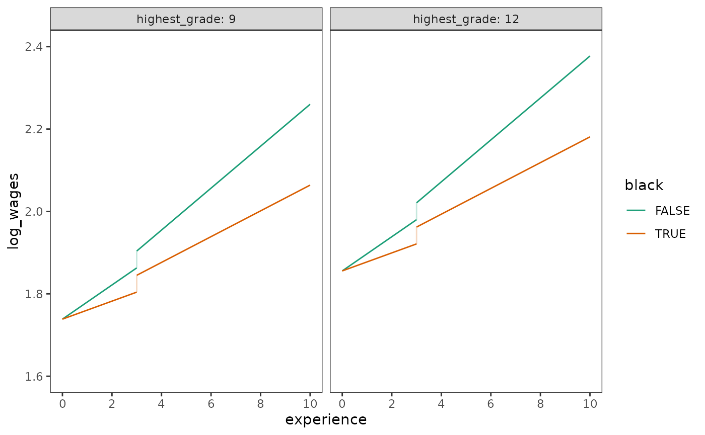

Chapter 6: Modeling Discontinuous and Nonlinear Change
Source:vignettes/articles/chapter-6.Rmd
chapter-6.RmdThis chapter is under construction.
library(alda)
library(dplyr)
#>
#> Attaching package: 'dplyr'
#> The following objects are masked from 'package:stats':
#>
#> filter, lag
#> The following objects are masked from 'package:base':
#>
#> intersect, setdiff, setequal, union
library(tidyr)
library(purrr)
library(ggplot2)
library(scales)
#>
#> Attaching package: 'scales'
#> The following object is masked from 'package:purrr':
#>
#> discard
library(lme4)
#> Loading required package: Matrix
#>
#> Attaching package: 'Matrix'
#> The following objects are masked from 'package:tidyr':
#>
#> expand, pack, unpack6.1 Discontinuous Individual Change
Table 6.1, page 192:
dropout_wages |>
filter(id %in% c(206,2365,4384)) |>
select(id, log_wages, experience, ged, postsecondary_education) |>
mutate(ged_x_experience = ged * experience)
#> # A tibble: 22 × 6
#> id log_wages experience ged postsecondary_education ged_x_experience
#> <fct> <dbl> <dbl> <dbl> <dbl> <dbl>
#> 1 206 2.03 1.87 0 0 0
#> 2 206 2.30 2.81 0 0 0
#> 3 206 2.48 4.31 0 0 0
#> 4 2365 1.78 0.66 0 0 0
#> 5 2365 1.76 1.68 0 0 0
#> 6 2365 1.71 2.74 0 0 0
#> 7 2365 1.74 3.68 0 0 0
#> 8 2365 2.19 4.68 1 0 4.68
#> 9 2365 2.04 5.72 1 1.04 5.72
#> 10 2365 2.32 6.72 1 2.04 6.72
#> # ℹ 12 more rowsTable 6.2, page 203:
wages_fit_A <- lmer(
log_wages ~
experience +
I(highest_grade - 9) +
experience:black +
I(unemployment_rate - 7) +
(1 + experience | id),
data = dropout_wages,
REML = FALSE
)
deviance(wages_fit_A)
#> [1] 4830.519
wages_fit_B <- update(
wages_fit_A,
. ~ . - (1 + experience | id) + ged + (1 + experience + ged | id),
control = lmerControl(optimizer = "bobyqa")
)
deviance(wages_fit_B)
#> [1] 4805.517
wages_fit_C <- update(
wages_fit_A,
. ~ . + ged,
control = lmerControl(optimizer = "bobyqa")
)
deviance(wages_fit_C)
#> [1] 4818.324
wages_fit_D <- update(
wages_fit_A,
. ~
. -
(1 + experience | id) +
postsecondary_education +
(1 + experience + postsecondary_education | id),
control = lmerControl(optimizer = "bobyqa")
)
deviance(wages_fit_D)
#> [1] 4817.377
wages_fit_E <- update(
wages_fit_A,
. ~ . + postsecondary_education
)
deviance(wages_fit_E)
#> [1] 4820.706
wages_fit_F <- update(
wages_fit_A,
. ~
. -
(1 + experience | id) +
ged +
postsecondary_education +
(1 + experience + ged + postsecondary_education | id),
control = lmerControl(optimizer = "bobyqa")
)
deviance(wages_fit_F)
#> [1] 4789.354
wages_fit_G <- update(
wages_fit_F,
. ~
. -
(1 + experience + ged + postsecondary_education | id) +
(1 + experience + ged | id)
)
deviance(wages_fit_G)
#> [1] 4802.688
wages_fit_H <- update(
wages_fit_F,
. ~
. -
(1 + experience + ged + postsecondary_education | id) +
(1 + experience + postsecondary_education | id)
)
deviance(wages_fit_H)
#> [1] 4812.639
# FIXME: Singular
wages_fit_I <- update(
wages_fit_A,
. ~
. -
(1 + experience | id) +
ged +
experience:ged +
(1 + experience + ged + experience:ged | id)
)
#> boundary (singular) fit: see help('isSingular')
deviance(wages_fit_I)
#> [1] 4793.508
wages_fit_J <- update(
wages_fit_I,
. ~
. -
(1 + experience + ged + experience:ged | id) +
(1 + experience + ged | id)
)
#> Warning in checkConv(attr(opt, "derivs"), opt$par, ctrl = control$checkConv, :
#> Model failed to converge with max|grad| = 0.00241207 (tol = 0.002, component 1)
deviance(wages_fit_J)
#> [1] 4804.601
anova(wages_fit_A, wages_fit_B, wages_fit_D)
#> Data: dropout_wages
#> Models:
#> wages_fit_A: log_wages ~ experience + I(highest_grade - 9) + experience:black + I(unemployment_rate - 7) + (1 + experience | id)
#> wages_fit_B: log_wages ~ experience + I(highest_grade - 9) + I(unemployment_rate - 7) + ged + (1 + experience + ged | id) + experience:black
#> wages_fit_D: log_wages ~ experience + I(highest_grade - 9) + I(unemployment_rate - 7) + postsecondary_education + (1 + experience + postsecondary_education | id) + experience:black
#> npar AIC BIC logLik deviance Chisq Df Pr(>Chisq)
#> wages_fit_A 9 4848.5 4909.4 -2415.3 4830.5
#> wages_fit_B 13 4831.5 4919.5 -2402.8 4805.5 25.002 4 5.027e-05 ***
#> wages_fit_D 13 4843.4 4931.3 -2408.7 4817.4 0.000 0
#> ---
#> Signif. codes: 0 '***' 0.001 '**' 0.01 '*' 0.05 '.' 0.1 ' ' 1
anova(wages_fit_B, wages_fit_C, wages_fit_F, wages_fit_I)
#> Data: dropout_wages
#> Models:
#> wages_fit_C: log_wages ~ experience + I(highest_grade - 9) + I(unemployment_rate - 7) + (1 + experience | id) + ged + experience:black
#> wages_fit_B: log_wages ~ experience + I(highest_grade - 9) + I(unemployment_rate - 7) + ged + (1 + experience + ged | id) + experience:black
#> wages_fit_F: log_wages ~ experience + I(highest_grade - 9) + I(unemployment_rate - 7) + ged + postsecondary_education + (1 + experience + ged + postsecondary_education | id) + experience:black
#> wages_fit_I: log_wages ~ experience + I(highest_grade - 9) + I(unemployment_rate - 7) + ged + (1 + experience + ged + experience:ged | id) + experience:black + experience:ged
#> npar AIC BIC logLik deviance Chisq Df Pr(>Chisq)
#> wages_fit_C 10 4838.3 4906.0 -2409.2 4818.3
#> wages_fit_B 13 4831.5 4919.5 -2402.8 4805.5 12.807 3 0.005074 **
#> wages_fit_F 18 4825.4 4947.1 -2394.7 4789.4 16.163 5 0.006392 **
#> wages_fit_I 18 4829.5 4951.3 -2396.8 4793.5 0.000 0
#> ---
#> Signif. codes: 0 '***' 0.001 '**' 0.01 '*' 0.05 '.' 0.1 ' ' 1
anova(wages_fit_D, wages_fit_E, wages_fit_F)
#> Data: dropout_wages
#> Models:
#> wages_fit_E: log_wages ~ experience + I(highest_grade - 9) + I(unemployment_rate - 7) + (1 + experience | id) + postsecondary_education + experience:black
#> wages_fit_D: log_wages ~ experience + I(highest_grade - 9) + I(unemployment_rate - 7) + postsecondary_education + (1 + experience + postsecondary_education | id) + experience:black
#> wages_fit_F: log_wages ~ experience + I(highest_grade - 9) + I(unemployment_rate - 7) + ged + postsecondary_education + (1 + experience + ged + postsecondary_education | id) + experience:black
#> npar AIC BIC logLik deviance Chisq Df Pr(>Chisq)
#> wages_fit_E 10 4840.7 4908.4 -2410.3 4820.7
#> wages_fit_D 13 4843.4 4931.3 -2408.7 4817.4 3.3292 3 0.3436
#> wages_fit_F 18 4825.4 4947.1 -2394.7 4789.4 28.0233 5 3.602e-05 ***
#> ---
#> Signif. codes: 0 '***' 0.001 '**' 0.01 '*' 0.05 '.' 0.1 ' ' 1
anova(wages_fit_F, wages_fit_G, wages_fit_H)
#> Data: dropout_wages
#> Models:
#> wages_fit_G: log_wages ~ experience + I(highest_grade - 9) + I(unemployment_rate - 7) + ged + postsecondary_education + (1 + experience + ged | id) + experience:black
#> wages_fit_H: log_wages ~ experience + I(highest_grade - 9) + I(unemployment_rate - 7) + ged + postsecondary_education + (1 + experience + postsecondary_education | id) + experience:black
#> wages_fit_F: log_wages ~ experience + I(highest_grade - 9) + I(unemployment_rate - 7) + ged + postsecondary_education + (1 + experience + ged + postsecondary_education | id) + experience:black
#> npar AIC BIC logLik deviance Chisq Df Pr(>Chisq)
#> wages_fit_G 14 4830.7 4925.4 -2401.3 4802.7
#> wages_fit_H 14 4840.6 4935.3 -2406.3 4812.6 0.000 0
#> wages_fit_F 18 4825.4 4947.1 -2394.7 4789.4 23.285 4 0.000111 ***
#> ---
#> Signif. codes: 0 '***' 0.001 '**' 0.01 '*' 0.05 '.' 0.1 ' ' 1
anova(wages_fit_I, wages_fit_J)
#> Data: dropout_wages
#> Models:
#> wages_fit_J: log_wages ~ experience + I(highest_grade - 9) + I(unemployment_rate - 7) + ged + (1 + experience + ged | id) + experience:black + experience:ged
#> wages_fit_I: log_wages ~ experience + I(highest_grade - 9) + I(unemployment_rate - 7) + ged + (1 + experience + ged + experience:ged | id) + experience:black + experience:ged
#> npar AIC BIC logLik deviance Chisq Df Pr(>Chisq)
#> wages_fit_J 14 4832.6 4927.3 -2402.3 4804.6
#> wages_fit_I 18 4829.5 4951.3 -2396.8 4793.5 11.094 4 0.02553 *
#> ---
#> Signif. codes: 0 '***' 0.001 '**' 0.01 '*' 0.05 '.' 0.1 ' ' 1Table 6.3, page 205:
summary(wages_fit_F)
#> Linear mixed model fit by maximum likelihood ['lmerMod']
#> Formula: log_wages ~ experience + I(highest_grade - 9) + I(unemployment_rate -
#> 7) + ged + postsecondary_education + (1 + experience + ged +
#> postsecondary_education | id) + experience:black
#> Data: dropout_wages
#> Control: lmerControl(optimizer = "bobyqa")
#>
#> AIC BIC logLik deviance df.resid
#> 4825.4 4947.1 -2394.7 4789.4 6384
#>
#> Scaled residuals:
#> Min 1Q Median 3Q Max
#> -4.3462 -0.5133 -0.0387 0.4457 6.9719
#>
#> Random effects:
#> Groups Name Variance Std.Dev. Corr
#> id (Intercept) 0.041323 0.20328
#> experience 0.001360 0.03688 -0.23
#> ged 0.016312 0.12772 0.46 0.62
#> postsecondary_education 0.003355 0.05792 -0.51 -0.43 -0.53
#> Residual 0.093873 0.30639
#> Number of obs: 6402, groups: id, 888
#>
#> Fixed effects:
#> Estimate Std. Error t value
#> (Intercept) 1.738574 0.011942 145.587
#> experience 0.041471 0.002797 14.827
#> I(highest_grade - 9) 0.039029 0.006243 6.252
#> I(unemployment_rate - 7) -0.011724 0.001783 -6.576
#> ged 0.040875 0.021989 1.859
#> postsecondary_education 0.009423 0.005545 1.699
#> experience:black -0.019620 0.004470 -4.389
#>
#> Correlation of Fixed Effects:
#> (Intr) exprnc I(_-9) I(_-7) ged pstsc_
#> experience -0.531
#> I(hghst_-9) 0.093 -0.023
#> I(nmply_-7) -0.368 0.255 -0.045
#> ged -0.323 0.122 -0.020 0.055
#> pstscndry_d 0.159 -0.368 -0.021 -0.012 -0.558
#> exprnc:blck -0.059 -0.297 -0.018 0.067 0.007 -0.056Figure 6.3:
prototypical_dropouts <- tibble(
experience = rep(c(0, 3, 3, 12), times = 4),
highest_grade = rep(c(9, 12), each = 4, times = 2),
black = rep(c(FALSE, TRUE), each = 8),
ged = rep(c(0, 0, 1, 1), times = 4),
unemployment_rate = 7
) |>
mutate(postsecondary_education = ifelse(ged == 0, 0, experience - 3))
prototypical_dropout_scores <- tibble(
log_wages = predict(
wages_fit_F,
prototypical_dropouts,
re.form = NA
)
)
prototypical_dropouts |>
bind_cols(prototypical_dropout_scores) |>
ggplot(aes(x = experience, y = log_wages, colour = as.logical(black))) +
geom_line() +
scale_x_continuous(breaks = seq(0, 10, by = 2)) +
coord_cartesian(xlim = c(0, 10), ylim = c(1.6, 2.4)) +
facet_wrap(vars(highest_grade))
6.2 Using Transformations to Model Nonlinear Individual Change
Figure 6.4, page 209:
alcohol_fit <- lmer(
alcohol_use ~
I(age - 14) * peer_alcohol_use + child_of_alcoholic + (1 + I(age - 14) | id),
data = alcohol_use_1,
REML = FALSE
)
prototypical_alcohol_users <- tibble(
age = rep(seq(14, 16, by = .25), times = 4),
child_of_alcoholic = rep(c(0, 1), each = 9, times = 2),
peer_alcohol_use = rep(c(.655, 1.381), each = 18)
)
prototypical_alcohol_use <- tibble(
alcohol_use = predict(
alcohol_fit,
prototypical_alcohol_users,
re.form = NA
)
)
prototypical_alcohol_users |>
bind_cols(prototypical_alcohol_use) |>
mutate(alcohol_use = alcohol_use^2) |>
ggplot(aes(x = age, y = alcohol_use, colour = factor(peer_alcohol_use))) +
geom_line() +
facet_wrap(vars(child_of_alcoholic)) +
coord_cartesian(xlim = c(13, 17), ylim = c(0, 3))
Figure 6.6, page 212:
ggplot(berkeley, aes(x = age, y = iq)) +
geom_point(data = \(.x) mutate(.x, group = "1: untransformed")) +
geom_point(data = \(.x) mutate(.x, iq = iq^(2.3), group = "2: iq^(2.3)")) +
geom_point(data = \(.x) mutate(.x, age = age^(1/2.3), group = "3: age^(1/2.3)")) +
facet_wrap(vars(group), scales = "free")
6.3 Representing Individual Change Using a Polynomial Function of TIME
Figure 6.7, page 218:
# Polynomial formulas for plotting:
linear <- formula(y ~ x)
quadratic <- formula(y ~ x + I(x^2))
cubic <- formula(y ~ x + I(x^2) + I(x^3))
quartic <- formula(y ~ x + I(x^2) + I(x^3) + I(x^4))
# We need to pmap() over geoms to get facets with unique subsets of data and
# smooths since there's no aesthetic mappings for geom_smooth() formulas.
participant_params <- list(
list(1, 6, 11, 25, 34, 36, 40, 26),
LETTERS[1:8],
list(quadratic, quadratic, linear, linear, cubic, quartic, cubic, quartic)
)
ggplot(mapping = aes(x = grade, y = externalizing_behaviour)) +
{
pmap(
participant_params,
\(.x, .y, .z) {
# Subset data to a given id and add a case variable for faceting.
participant_data <- externalizing_behaviour |>
filter(id == .x) |>
mutate(participant = .y)
# Rather than adding the geoms together with + they need to be returned
# as a list of geoms to be added to the plot from within pmap().
list(
geom_point(data = participant_data),
geom_smooth(
data = participant_data,
method = "lm", formula = quartic, se = FALSE,
linewidth = .25, linetype = 2
),
geom_smooth(
data = participant_data,
method = "lm", formula = .z, se = FALSE, linewidth = .5
)
)
}
)
} +
scale_x_continuous(breaks = 0:7) +
coord_cartesian(xlim = c(0, 7)) +
facet_wrap(vars(participant), nrow = 2)
Table 6.5, page 221:
behaviour_fit_A <- lmer(
externalizing_behaviour ~ 1 + (1 | id),
data = externalizing_behaviour,
REML = FALSE
)
summary(behaviour_fit_A)
#> Linear mixed model fit by maximum likelihood ['lmerMod']
#> Formula: externalizing_behaviour ~ 1 + (1 | id)
#> Data: externalizing_behaviour
#>
#> AIC BIC logLik deviance df.resid
#> 2016.3 2027.0 -1005.1 2010.3 267
#>
#> Scaled residuals:
#> Min 1Q Median 3Q Max
#> -2.6629 -0.5255 -0.1648 0.4803 3.5393
#>
#> Random effects:
#> Groups Name Variance Std.Dev.
#> id (Intercept) 87.42 9.350
#> Residual 70.20 8.379
#> Number of obs: 270, groups: id, 45
#>
#> Fixed effects:
#> Estimate Std. Error t value
#> (Intercept) 12.963 1.484 8.734
behaviour_fit_B <- lmer(
externalizing_behaviour ~ time + (1 + time | id),
data = externalizing_behaviour,
REML = FALSE
)
summary(behaviour_fit_B)
#> Linear mixed model fit by maximum likelihood ['lmerMod']
#> Formula: externalizing_behaviour ~ time + (1 + time | id)
#> Data: externalizing_behaviour
#>
#> AIC BIC logLik deviance df.resid
#> 2003.7 2025.3 -995.9 1991.7 264
#>
#> Scaled residuals:
#> Min 1Q Median 3Q Max
#> -2.9552 -0.4928 -0.1353 0.4207 2.8079
#>
#> Random effects:
#> Groups Name Variance Std.Dev. Corr
#> id (Intercept) 123.526 11.114
#> time 4.693 2.166 -0.52
#> Residual 53.718 7.329
#> Number of obs: 270, groups: id, 45
#>
#> Fixed effects:
#> Estimate Std. Error t value
#> (Intercept) 13.2899 1.8358 7.239
#> time -0.1308 0.4153 -0.315
#>
#> Correlation of Fixed Effects:
#> (Intr)
#> time -0.589
behaviour_fit_C <- lmer(
externalizing_behaviour ~
poly(time, 2, raw = TRUE) + (1 + poly(time, 2, raw = TRUE) | id),
data = externalizing_behaviour,
REML = FALSE
)
summary(behaviour_fit_C)
#> Linear mixed model fit by maximum likelihood ['lmerMod']
#> Formula: externalizing_behaviour ~ poly(time, 2, raw = TRUE) + (1 + poly(time,
#> 2, raw = TRUE) | id)
#> Data: externalizing_behaviour
#>
#> AIC BIC logLik deviance df.resid
#> 1995.8 2031.8 -987.9 1975.8 260
#>
#> Scaled residuals:
#> Min 1Q Median 3Q Max
#> -2.2153 -0.4833 -0.1148 0.3781 2.6531
#>
#> Random effects:
#> Groups Name Variance Std.Dev. Corr
#> id (Intercept) 107.077 10.348
#> poly(time, 2, raw = TRUE)1 24.606 4.960 -0.07
#> poly(time, 2, raw = TRUE)2 1.215 1.102 -0.12 -0.91
#> Residual 41.985 6.480
#> Number of obs: 270, groups: id, 45
#>
#> Fixed effects:
#> Estimate Std. Error t value
#> (Intercept) 13.970 1.774 7.876
#> poly(time, 2, raw = TRUE)1 -1.151 1.107 -1.040
#> poly(time, 2, raw = TRUE)2 0.204 0.228 0.894
#>
#> Correlation of Fixed Effects:
#> (Intr) p(,2,r=TRUE)1
#> p(,2,r=TRUE)1 -0.322
#> p(,2,r=TRUE)2 0.131 -0.932
# Singular
behaviour_fit_D <- lmer(
externalizing_behaviour ~
poly(time, 3, raw = TRUE) + (1 + poly(time, 3, raw = TRUE) | id),
data = externalizing_behaviour,
REML = FALSE
)
#> boundary (singular) fit: see help('isSingular')
summary(behaviour_fit_D)
#> Linear mixed model fit by maximum likelihood ['lmerMod']
#> Formula: externalizing_behaviour ~ poly(time, 3, raw = TRUE) + (1 + poly(time,
#> 3, raw = TRUE) | id)
#> Data: externalizing_behaviour
#>
#> AIC BIC logLik deviance df.resid
#> 1997.4 2051.3 -983.7 1967.4 255
#>
#> Scaled residuals:
#> Min 1Q Median 3Q Max
#> -2.37389 -0.44738 -0.09901 0.36132 2.52632
#>
#> Random effects:
#> Groups Name Variance Std.Dev. Corr
#> id (Intercept) 128.9137 11.3540
#> poly(time, 3, raw = TRUE)1 105.2094 10.2572 -0.48
#> poly(time, 3, raw = TRUE)2 16.3605 4.0448 0.53 -0.97
#> poly(time, 3, raw = TRUE)3 0.1736 0.4167 -0.68 0.94 -0.98
#> Residual 37.8546 6.1526
#> Number of obs: 270, groups: id, 45
#>
#> Fixed effects:
#> Estimate Std. Error t value
#> (Intercept) 13.79453 1.91640 7.198
#> poly(time, 3, raw = TRUE)1 -0.35006 2.32076 -0.151
#> poly(time, 3, raw = TRUE)2 -0.23430 1.05656 -0.222
#> poly(time, 3, raw = TRUE)3 0.05844 0.12977 0.450
#>
#> Correlation of Fixed Effects:
#> (Intr) p(,3,r=TRUE)1 p(,3,r=TRUE)2
#> p(,3,r=TRUE)1 -0.510
#> p(,3,r=TRUE)2 0.449 -0.956
#> p(,3,r=TRUE)3 -0.445 0.886 -0.978
#> optimizer (nloptwrap) convergence code: 0 (OK)
#> boundary (singular) fit: see help('isSingular')6.4 Truly Nonlinear Trajectories
Figure 6.8, page 227:
cognitive_growth |>
filter(id %in% c(1, 4, 6, 7, 8, 11, 12, 15)) |>
ggplot(aes(x = game, y = nmoves)) +
geom_point() +
coord_cartesian(xlim = c(0, 30), ylim = c(0, 25)) +
facet_wrap(vars(id), ncol = 4, labeller = label_both)
Help wanted for Table 6.6, page 231, see: https://github.com/mccarthy-m-g/alda/issues/3
Figure 6.10, page 232:
# TODO after resolving the equations and code for Models A and B.